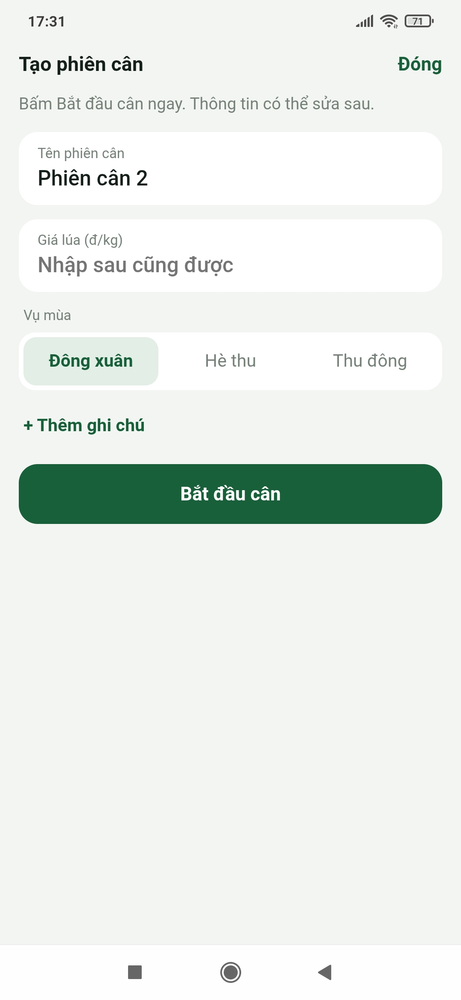
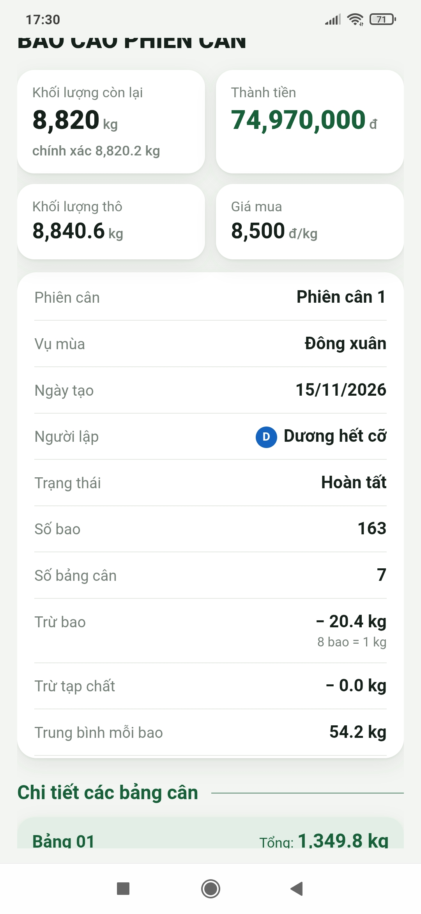
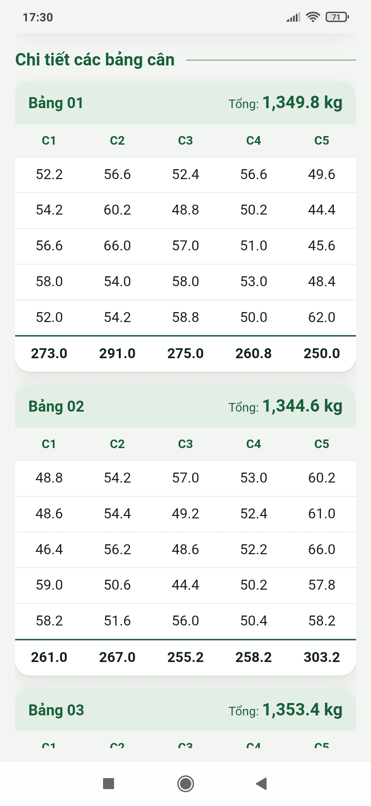

OK Cân
OK Cân là ứng dụng được phát triển nhằm hỗ trợ bà con, thương lái và những người làm công việc thu mua lúa quản lý quá trình cân, tính toán khối lượng và lập báo cáo một cách nhanh chóng, chính xác, thuận tiện.
Ứng dụng thay thế cách ghi chép thủ công bằng giấy bằng một quy trình làm việc trực quan trên điện thoại. Từ nhập số cân từng bao, tính tổng, trừ bao bì và tạp chất đến tính thành tiền và tổng hợp báo cáo phiên cân – tất cả được thực hiện ngay trên một ứng dụng.
Được xây dựng từ nhu cầu thực tế ngoài đồng và tại các điểm thu mua, OK Cân hướng đến sự đơn giản, dễ sử dụng và thao tác nhanh.
Điểm nổi bật
- Ghi chép phiên cân. Tạo và quản lý nhiều phiên cân, tổ chức dữ liệu theo từng bảng và từng cột rõ ràng.
- Bàn phím nhập liệu chuyên dụng. Bàn phím số lớn, thao tác thuận tiện, tự động chuyển ô sau mỗi ba chữ số. Ví dụ: nhập 555 tương ứng 55,5 kg.
- Tính toán tự động. Cộng tổng khối lượng theo cột, theo bảng và toàn bộ phiên cân; hỗ trợ trừ bao bì, tạp chất và làm tròn khối lượng.
- Quản lý giá và thành tiền. Tự động tính thành tiền dựa trên khối lượng thực tế và đơn giá.
- Báo cáo phiên cân. Tổng hợp thông tin phiên cân và chi tiết các bảng cân thành báo cáo trực quan, thuận tiện lưu trữ hoặc gửi đi.
- Chia sẻ và sao lưu. Xuất báo cáo dưới dạng hình ảnh, chia sẻ qua Zalo, Messenger hoặc lưu về máy; hỗ trợ sao lưu và phục hồi dữ liệu bằng tệp riêng.
- Tạo phiên cân nhanh. Bắt đầu công việc nhanh chóng chỉ với hai chạm, không phải trải qua nhiều bước thiết lập.
- Giao diện linh hoạt. Hỗ trợ phóng to giao diện và chế độ tối (Dark Mode), thuận tiện sử dụng trong nhiều điều kiện làm việc.
- Hoạt động ngoại tuyến. Dữ liệu được lưu trữ ngay trên thiết bị, sử dụng ứng dụng mà không cần kết nối Internet.
Hình ảnh






OK Cân ưu tiên quyền riêng tư và dữ liệu cá nhân của người dùng. Thông tin được lưu trữ trên thiết bị, không yêu cầu tài khoản trực tuyến để sử dụng các chức năng chính. Xem thêm tại Chính sách bảo mật.